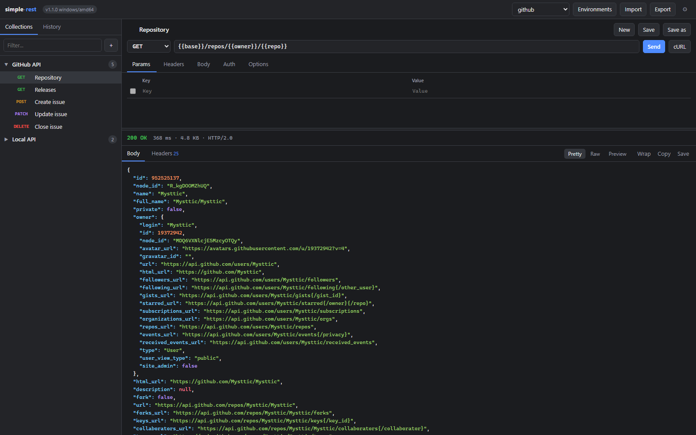
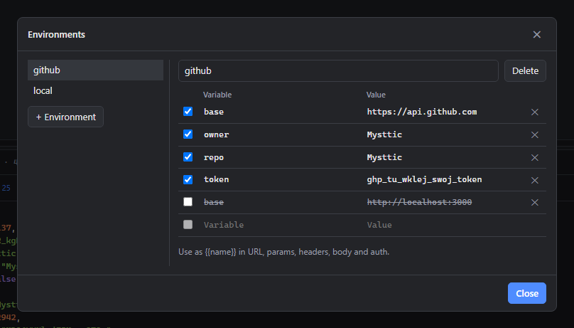
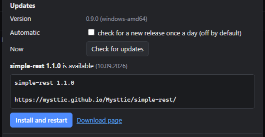
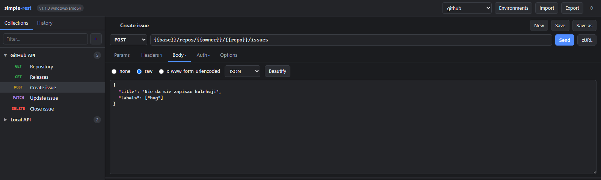

Collections, environments, history and a response viewer, like the big tools, without the installer, the account or the cloud.
Download one file, run it, the browser opens. That is the whole setup.

Latest release: checking…
One .exe, no installer. Put it in a folder of its own: it
keeps its data next to itself and updates itself in place.
A static binary for any distribution, nothing to install.
chmod +x, run, done.
For a Pi 3, 4 or 5 running a 64-bit system. Start it there and reach the UI from any machine on the network.
Download for Raspberry Pi (64-bit)SHA-256 of the three files above, the same list the updater inside the app verifies a download against.
Download checksums
The files are not signed with a certificate, so Windows SmartScreen shows
“Windows protected your PC”. Choose “More info”, then “Run anyway”. Once
running, the app can tell you when a newer release is out and install it
for you; that check stays off until you turn it on in Settings. On a phone,
a tablet or anything else without a file of its own, start the program on
one of the machines above with -listen 0.0.0.0:8787 and open
its address in that device’s browser.
Everything a day of API work needs, in a browser tab served by a 7 MB binary.
The page in your browser only talks to the program on localhost. The program sends the real request, so any API answers, with every header visible.
Every method, query parameters synced with the URL, headers, raw or form bodies, Basic, Bearer and API key auth, timeouts, redirects, TLS verification and a cookie jar.
Saved requests in collections, a history of what you sent, and
{{variables}} from the active environment substituted in
URL, headers, body and auth.
Import a Postman Collection v2.1 or a Postman environment, export
your own as JSON, copy any request as a curl command.
Status, time, size and protocol, headers, JSON with colours, raw text, an HTML or image preview, copy or save the body to a file.
Collections, history and environments live in a JSON file next to the program. Move the folder and everything comes along.
Where the time actually goes: the variables you reuse, the update you did not have to go looking for, and the request you are building.



The program listens on 127.0.0.1 only and refuses requests from other origins and hosts, so nothing else on the machine or the network can use it as a proxy.
No telemetry, no account, nothing collected. The only outbound request the app makes by itself is the check for a newer release, and it stays off until you turn it on.
The updater fetches the release from this site, checks the size and the SHA-256 against the published list, and only then swaps the file.